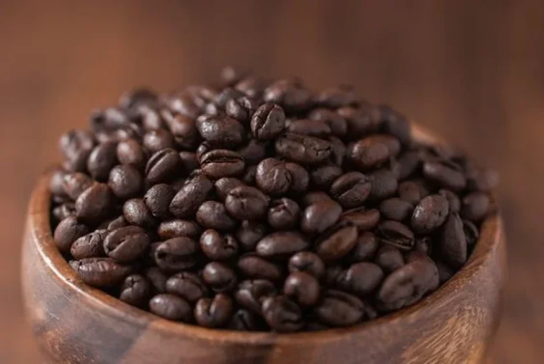
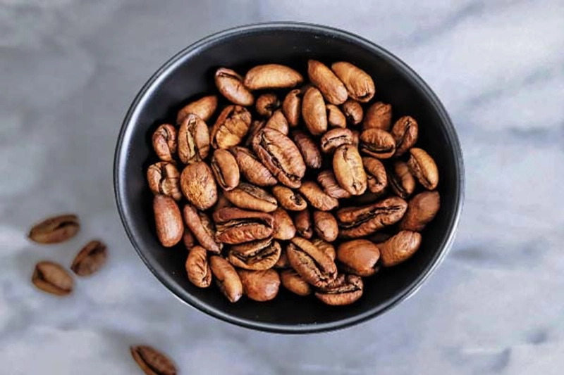
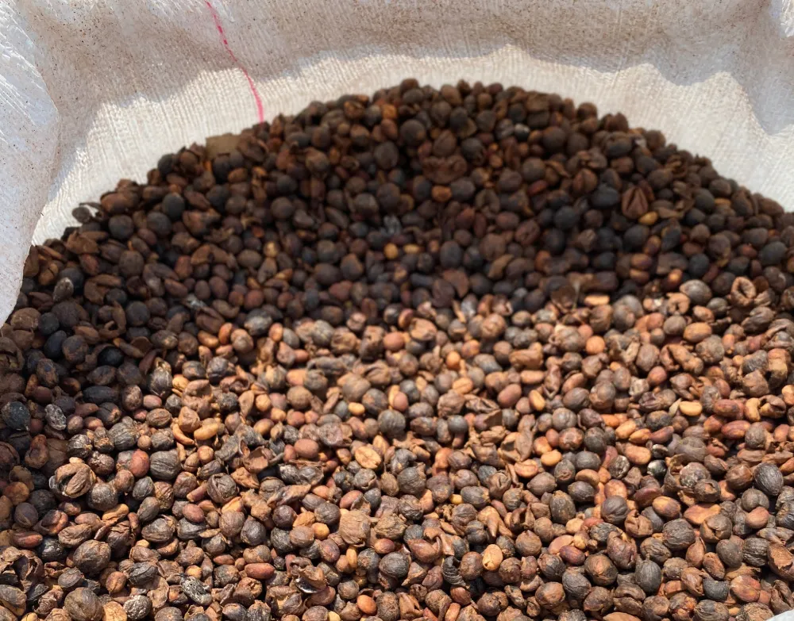
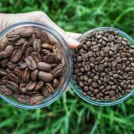

Disfrute de la experiencia inigualable de adquirir su selección de café predilecta con absoluta comodidad. Nuestra plataforma ha sido diseñada meticulosamente para ofrecerle un proceso de compra ágil, seguro y sofisticado, permitiéndole recibir la excelencia de nuestros granos directamente en la tranquilidad de su hogar.
Estamos ansiosos por atenderle. Realiza tu pedido o visitanos.
| Tipo | Caracteristicas | Fotografia |
|---|---|---|
| Arábica | Grano de alta calidad, reconocido por su aroma refinado, acidez suave y notas dulces y afrutadas. Es la variedad más apreciada en cafés especiales. | |
| Robusta | Café de sabor intenso y amargo, con mayor contenido de cafeína y cuerpo pronunciado. Se utiliza frecuentemente en mezclas para aportar fuerza y crema. |  |
| Liberica | Variedad poco común, de granos grandes y aroma distintivo, con notas florales y amaderadas. Ofrece un perfil complejo y exótico. |  |
| Excelsa | Subespecie de la familia Liberica, valorada por su acidez marcada y sabores frutales y especiados. Aporta profundidad y contraste en mezclas gourmet. |  |
| Maragogipe | Variedad de grano grande derivada del Arábica, conocida por su sabor suave, baja acidez y perfil aromático elegante y delicado. |  |